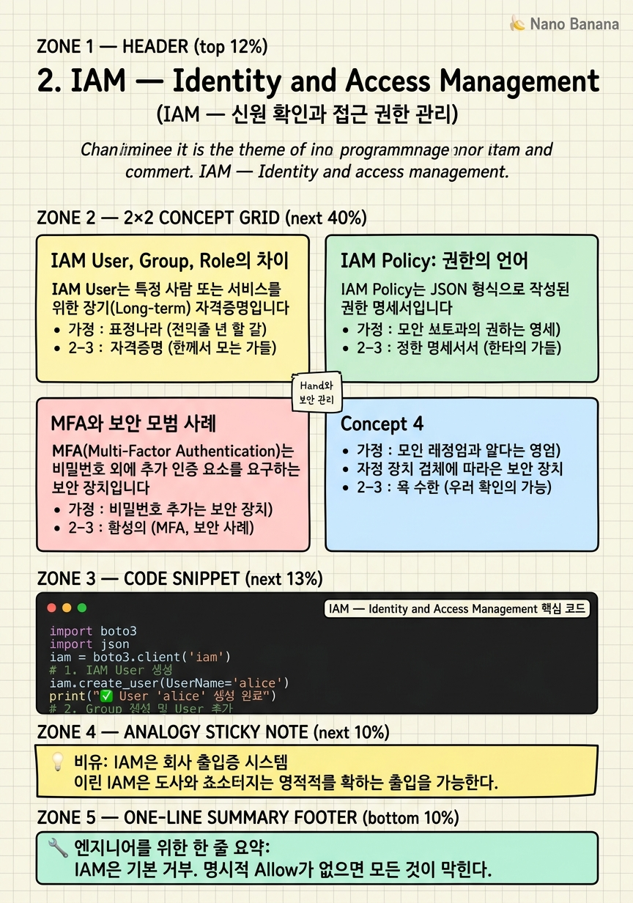

IAM — Identity and Access Management

🎯 학습 목표
- IAM User, Group, Role의 차이를 설명하고 적절히 생성할 수 있다
- JSON 형식의 IAM Policy를 읽고 해석할 수 있다
- EC2에 S3 접근 권한을 IAM Role로 부여할 수 있다
- MFA(Multi-Factor Authentication)를 활성화할 수 있다
- 최소 권한 원칙(Least Privilege)을 설명하고 적용할 수 있다
IAM(Identity and Access Management)은 AWS의 모든 보안의 출발점입니다. 아무리 잘 설계된 인프라도 잘못된 권한 설정 하나가 전체를 무너뜨릴 수 있습니다. 2019년 Capital One 데이터 유출 사고는 IAM Role 설정 오류로 EC2 인스턴스가 S3의 모든 버킷에 접근할 수 있었던 것이 원인이었습니다. 이처럼 IAM은 단순한 설정이 아니라 보안 아키텍처의 핵심입니다.
IAM은 크게 4가지 개념으로 이루어집니다: 누구인가(Principal), 무엇을 할 수 있는가(Permission), 어디에(Resource), 어떤 조건에서(Condition) — 이 4가지가 모여 하나의 IAM Policy를 구성합니다.
 이미지 출처: © Amazon Web Services, Inc. — How IAM works (교육 목적 인용)
이미지 출처: © Amazon Web Services, Inc. — How IAM works (교육 목적 인용)
이 챕터에서는 실제로 IAM User를 만들고, Group으로 묶어 권한을 관리하고, EC2가 S3에 접근할 수 있도록 Role을 설정하는 실습을 중심으로 진행합니다.
핵심 내용
IAM User, Group, Role의 차이
IAM User는 특정 사람 또는 서비스를 위한 장기(Long-term) 자격증명입니다. 이름·비밀번호·Access Key를 가지며, AWS 콘솔 로그인이나 CLI 사용에 쓰입니다. 팀원 A에게 IAM User를 만들어 주면 그 사람만의 독립적인 AWS 접근 자격이 생깁니다.
IAM Group은 IAM User의 집합입니다. Group에 Policy(권한)를 붙이면 Group에 속한 모든 User가 그 권한을 자동으로 상속받습니다. 예를 들어 Developers Group에 S3 읽기 권한을 부여하면, 개발자 5명 모두가 S3를 읽을 수 있습니다. 나중에 개발자가 추가되면 Group에 넣기만 하면 됩니다.
IAM Role은 사람이 아니라 서비스(EC2, Lambda)나 외부 계정이 가정(Assume)하는 임시(Short-term) 자격증명입니다. EC2 인스턴스가 S3에 파일을 업로드해야 할 때, 코드 안에 Access Key를 하드코딩하는 것은 매우 위험합니다. 대신 EC2에 S3WriteRole을 부착하면, EC2는 자동으로 임시 자격증명을 얻어 S3에 접근할 수 있습니다.
| 항목 | User | Group | Role |
|---|---|---|---|
| 대상 | 사람/서비스 | User 묶음 | 서비스·계정 |
| 자격증명 유효 기간 | 장기 | N/A | 단기(1시간) |
| Access Key 있음 | ✅ | ❌ | ❌ (STS 토큰) |
| 콘솔 로그인 | ✅ | ❌ | 위임으로만 |
모범 사례: Lambda, EC2, ECS Task는 모두 User가 아닌 Role을 사용해야 합니다. Role은 자동으로 교체되는 임시 자격증명을 사용하므로, 누출되어도 만료 시간이 짧습니다.
IAM Policy: 권한의 언어
IAM Policy는 JSON 형식으로 작성된 권한 명세서입니다. 모든 Policy에는 Statement 배열이 있고, 각 Statement는 Effect(Allow/Deny), Action(무엇을), Resource(어디에) 세 가지 핵심 요소를 가집니다.
{
"Version": "2012-10-17",
"Statement": [
{
"Effect": "Allow",
"Action": ["s3:GetObject", "s3:PutObject"],
"Resource": "arn:aws:s3:::my-bucket/*",
"Condition": {
"IpAddress": {"aws:SourceIp": "203.0.113.0/24"}
}
}
]
}
위 Policy는 '특정 IP 대역에서 my-bucket 버킷 안의 모든 객체에 대해 읽기·쓰기를 허용한다'는 뜻입니다. AWS는 Default Deny 원칙을 사용합니다. 명시적으로 Allow하지 않은 모든 것은 기본적으로 거부됩니다. 또한 하나라도 Explicit Deny가 있으면 Allow보다 우선합니다.
Policy 유형은 크게 2가지입니다.
-
AWS Managed Policy: AWS가 사전에 정의한 Policy (
AdministratorAccess,AmazonS3ReadOnlyAccess등). 빠르게 권한을 부여할 때 편리하지만 필요 이상으로 권한이 넓을 수 있습니다. -
Customer Managed Policy: 직접 만드는 Policy. 최소 권한 원칙을 적용하기에 적합합니다.
최소 권한 원칙(Least Privilege): 반드시 필요한 권한만 부여하고, 나머지는 모두 거부하는 원칙입니다. 처음에는 넓은 권한으로 시작해도 되지만, 프로덕션에서는 IAM Access Analyzer를 사용해 실제로 사용 중인 권한만 남기고 나머지를 제거해야 합니다.
MFA와 보안 모범 사례
MFA(Multi-Factor Authentication)는 비밀번호 외에 추가 인증 요소를 요구하는 보안 장치입니다. Google Authenticator나 Authy 같은 TOTP 앱, 또는 YubiKey 같은 하드웨어 토큰을 사용합니다. Root User와 관리자 권한 User에는 반드시 MFA를 활성화해야 합니다.
Access Key는 AWS CLI나 SDK를 사용할 때 필요한 Access Key ID + Secret Access Key 쌍입니다. 몇 가지 주의사항:
-
Secret Access Key는 생성 시 딱 한 번만 볼 수 있습니다. 잃어버리면 새로 만들어야 합니다.
-
Access Key를 GitHub 같은 공개 저장소에 절대 커밋하지 마세요. AWS는 자동으로 탐지하고 이메일을 보내지만, 그 사이에 이미 비용이 청구될 수 있습니다.
-
EC2·Lambda에서는 Access Key 대신 IAM Role을 사용하세요.
-
Access Key는 주기적으로 교체(Rotate)하세요.
AWS 보안 모범 사례 체크리스트:
- ✅ Root User에 MFA 활성화
- ✅ Root User Access Key 삭제
- ✅ 일상 작업용 IAM User 생성
- ✅ 필요한 서비스(EC2, Lambda)에 Role 적용
- ✅ CloudTrail 활성화 (모든 API 호출 기록)
- ✅ Access Analyzer로 외부 접근 가능한 리소스 감사
💡 비유로 이해하기
IAM은 대기업의 스마트 출입증 시스템과 같습니다. IAM User는 직원 개인의 출입증입니다. 신입사원이 입사하면 출입증을 발급하고, 퇴사하면 회수합니다.
IAM Group은 부서입니다. '개발팀' 출입증은 서버실(EC2) 접근이 되고, '회계팀' 출입증은 재무 시스템(RDS 재무 DB)만 접근이 됩니다. 개발자를 개발팀 Group에 넣으면 자동으로 서버실 문이 열립니다.
IAM Role은 방문증입니다. 외부 택배기사(Lambda)가 창고(S3)에 물건을 놔두려면, 경비원(STS 서비스)이 임시 방문증을 발급합니다. 방문증은 2시간 후 자동으로 만료됩니다. 택배기사가 방문증을 잃어버려도, 2시간 후에는 아무 의미가 없습니다. 이것이 임시 자격증명의 보안 장점입니다.
💻 코드 예시
아래 예제는 boto3로 IAM User를 만들고, Group에 추가하고, Policy를 연결하는 과정을 보여줍니다. 실제 프로덕션에서는 Terraform 같은 IaC 도구를 사용하지만, 원리를 이해하기 위한 예제입니다.
import boto3
import json
iam = boto3.client('iam')
# 1. IAM User 생성
iam.create_user(UserName='alice')
print("✅ User 'alice' 생성 완료")
# 2. Group 생성 및 User 추가
iam.create_group(GroupName='Developers')
iam.add_user_to_group(GroupName='Developers', UserName='alice')
print("✅ 'Developers' Group에 alice 추가")
# 3. 최소 권한 Policy 생성 (특정 버킷만 읽기 허용)
policy_document = json.dumps({
"Version": "2012-10-17",
"Statement": [{
"Effect": "Allow",
"Action": ["s3:GetObject", "s3:ListBucket"],
"Resource": [
"arn:aws:s3:::my-app-bucket",
"arn:aws:s3:::my-app-bucket/*"
]
}]
})
response = iam.create_policy(
PolicyName='S3ReadOnlyMyBucket',
PolicyDocument=policy_document
)
policy_arn = response['Policy']['Arn']
print(f"✅ Policy 생성: {policy_arn}")
# 4. Group에 Policy 연결
iam.attach_group_policy(
GroupName='Developers',
PolicyArn=policy_arn
)
print("✅ Policy를 Developers Group에 연결 완료")Policy는 JSON 문자열로 작성됩니다. arn:aws:s3:::my-app-bucket은 버킷 자체를, arn:aws:s3:::my-app-bucket/*는 버킷 안의 모든 객체를 의미합니다. Group에 Policy를 연결하면 Group에 속한 모든 User가 해당 권한을 가집니다. 이 패턴을 사용하면 User별로 Policy를 관리하지 않아도 됩니다.
🏭 현업에서의 평가
✅ 시니어가 보는 것
- Access Key를 코드에 하드코딩하는 것의 위험성을 이해하고 Role 대안을 제시하는가
- Policy의 Deny와 Allow 우선순위를 정확히 이해하는가
- CloudTrail로 IAM 감사(Audit) 로그를 확인하는 방법을 아는가
⚠️ 레드 플래그
- EC2나 Lambda에 Access Key를 직접 넣는 방식을 사용함
- AdministratorAccess를 기본으로 사용하고 세분화하지 않음
- MFA 없이 Root User를 일상 작업에 사용함
🎤 예상 인터뷰 질문
- EC2 인스턴스에서 DynamoDB에 접근해야 할 때 가장 안전한 방법은 무엇입니까?
- IAM Policy에서 Deny와 Allow가 충돌할 때 어떻게 동작합니까?
- 교차 계정(Cross-Account) 접근을 구현하는 방법을 설명해 주세요.
✨ 핵심 요약
Default Deny
IAM은 기본 거부. 명시적 Allow가 없으면 모든 것이 막힌다.
Explicit Deny 최우선
Deny는 Allow보다 항상 우선한다.
서비스엔 Role, 사람엔 User
EC2·Lambda는 User가 아닌 Role을 부착한다.
최소 권한 원칙
꼭 필요한 Action과 Resource만 허용하는 Policy를 작성한다.
Access Key 절대 커밋 금지
GitHub에 올라가는 순간 해킹 봇이 수분 내에 발견한다.
Group으로 관리 단순화
User별로 Policy를 관리하지 말고 Group을 활용한다.
MFA는 필수
Root User와 Admin 권한 User에는 반드시 MFA를 활성화한다.
ARN으로 리소스 특정
*는 너무 넓다. ARN으로 특정 리소스만 허용한다.